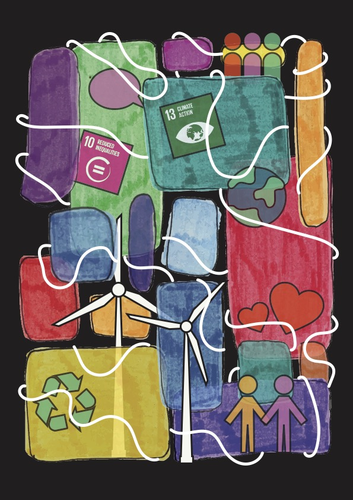

The Designer That I Am:
My Ethos.
An Essay I wrote for Pathways to Research, Visual below.
The most dangerous knowledge we hold as designers is what we think we know. My ethos as a designer consists of values that elevate lived experiences and support collaboration and inclusivity during the design process; promoting a mindset for myself that discourages using ‘what I think I know’ and encourages Whanaungatanga. My visual output is a reflection of these values, demonstrated through mixed media and illustrations that represent communities coming together to collaborate and work together to create the most positive outcome.
Forming my moodboard involved going back throughout my Pinterest and looking at all of my past pins to gauge how my design style and interests have changed. I have been using Pinterest for design for almost six years, so it had a very clear timeline of my progression as a designer. I picked both past and present images that I took, and still continue to take, inspiration from to form my moodboard, and I made a conscious choice to visually convey aspects of those images in my visual output, reflecting my journey in the design field.
My ‘self portrait’ is a combination of abstract physical work that I scanned in and literal digital work, reflecting the ‘deeper meaning’ that accompanies abstract, and the immediate demonstration of what I’ve created through the ‘literal’ illustrations. The way these two mediums interact with each other is emblematic of whanaungatanga - collaboration. They overlap and intertwine, bound together by the consistent looping stroke; different groups coming together to create one final image. The contrasting black background working with the abstract shapes of the layer above represents the individuals that make up this final outcome, everyone their own unique, handcrafted ‘shape’ or ‘colour’ standing out against the background. The digital illustrations above the abstract are simple, but effectively convey what they represent - this is an indirect reflection of the fact those values aren’t difficult to implement but create a world of difference to the design process and the final outcome. Sustainability icons, human figures together, communication and empathy motifs. I wanted the digital illustrations to seem almost like stickers, something removable that’s still an integral part of the design, reflecting how my values might change or be replaced over time but they’ll still have the same background, the same core ideology.
The values represented in my visual output, whanaungatanga, collaboration, and inclusivity, are important to me because I think design should be about creating the best achievable outcome that impacts as many people as possible, and I think these values both together and individually are stepping stones in the process to forming that best outcome.
As a designer right now, I think a lot of the work I’m producing has a big focus on my values. I try to include them in my process, and they’re definitely always in the back of my mind as I work - asking myself “how will this impact specific communities?”, or encouraging myself to research further into the issues I am designing for to ensure I have the best understanding I can as an individual on the outside of that group. I think my visual output encompasses this through just how much of it reflects collaboration and inclusivity - demonstrating the emphasis collaboration or co-design principles has on the work I produce. Even if I don’t actively use them in my work, I am keeping them in mind throughout the design process.
I think my ‘self portrait’ says I am a designer who’s encouraged and influenced quite heavily by whanaungatanga and inclusivity. I think it also communicates how there’s opportunity for my values or ideology to change in the future, or how it might have differed if I’d made it in the past, perhaps demonstrating my personal growth as a designer.
My visual output is a reflection of me and my values. It demonstrates the significance of whanaungatanga and inclusivity in my design process, and emphasises the importance of those values to me as a designer.